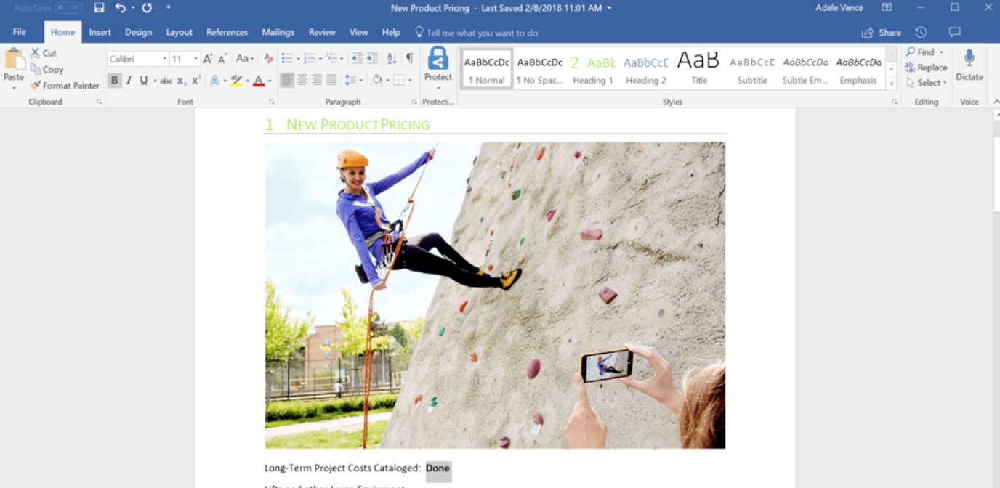

This was a feature developed as part of my software engineering internship at Microsoft. During 3 months I designed, developed, and shipped this feature that has now been used more than one million times by Word users all over the world.

More information about the feature can be found here. Also, if you're a Word for Mac user, try opening a PDF and editing it and see for yourself.